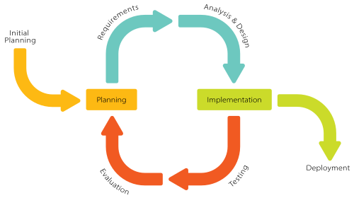

What is iterative model:
The iterative model is a type of software development life cycle model that focuses
on an initial, basic implementation that gradually adds more complexity and a
broader feature set until the final system is complete.
Main features:
It enables you to demonstrate and measure the progress of your project without any bias.
It lets you have a constant improvement in the quality of the project.
With continuous improvements, it helps you lower down the chances of risk.
You can experience good improvement in the accuracy of the various estimates that could be part of the project.
Example:
The iterative model is prevalent in the area of electronics. The evolution of mobile phones over time,
how speakers have become smaller and more portable over time, or even how refrigerators from the
same company have altered to accommodate new family needs.
These are all iterative procedures. Every day, the industry is changing itself in response to client feedback.
Iterative model diagram:

| Advantages | Disadvantages |
|---|---|
| Early Delivery of Functionality: The iterative model allows for the development of functional prototypes early in the project lifecycle. This helps clients and stakeholders review and provide feedback based on working software rather than abstract specifications. |
Increased Complexity: In a software development project for a healthcare application, frequent changes to requirements and design during iterations may lead to confusion among team members. This can result in difficulties managing the project, especially when multiple stakeholders demand conflicting updates. |
| Flexibility to Changing Requirements: The model supports evolving requirements, enabling developers to adapt to changes in user needs or market demands during subsequent iterations. |
Costly Development: Developing a mobile app with iterative feedback loops can become expensive due to repeated testing and redesigns. For instance, integrating user feedback for new features like augmented reality may require additional resources and advanced tools, increasing overall project costs. |
| Risk Management: High-risk elements are addressed early in the process, minimizing unknowns and potential issues later in the project lifecycle. |

| Advantages | Disadvantages |
|---|---|
| Early Delivery of Working Software: The incremental model allows the delivery of functional software early in the development lifecycle. This enables users to start utilizing core functionalities while additional features are developed incrementally. In practice, this supports early user engagement and helps businesses realize benefits sooner. |
Complex Planning and Coordination: The incremental model requires detailed upfront planning and coordination to ensure all increments integrate seamlessly. In practice, poor planning may lead to delays or uncoordinated development efforts. |
| Flexibility and Adaptability: Changes in requirements or scope can be incorporated more easily during development. This flexibility reduces costs associated with late-stage modifications. For example, if market conditions shift, teams can adapt ongoing increments to align with new demands. |
Potential for Design Issues: Incremental development can sometimes lead to design inconsistencies across modules, especially if changes are introduced mid-process. Fixing issues in one increment often requires adjustments across all others, consuming time and resources. |
| Risk Management: By breaking down the project into smaller iterations, risks can be identified and addressed early in each cycle. Teams can focus on resolving issues in one module before progressing, minimizing the likelihood of widespread problems. |
| Characteristic | Iterative model | Incremental model |
|---|---|---|
| Approach | Cyclic | Incremental |
| Feedback Frequency | Feedback is collected frequently at the end of each iteration, allowing for continuous refinement of the product. | Feedback is obtained after each increment, which is less frequent as increments are larger and delivered in stages. |
| Suitability by Project Type | Best suited for projects with high uncertainty or evolving requirements as it allows for ongoing adjustments. | Ideal for projects with well-defined requirements and a clear vision of the final product. |
| Risk Management | Risks are identified and mitigated in every iteration, providing early detection and resolution of issues. | Risks are managed incrementally, with each increment addressing specific risks related to its scope. |
| Functionality Completion Order | Functionality is progressively refined in cycles, starting with a basic version and improving it over time. | Functionality is added piece by piece, with each increment delivering a complete and functional part of the product. The incremental model is generally faster. |